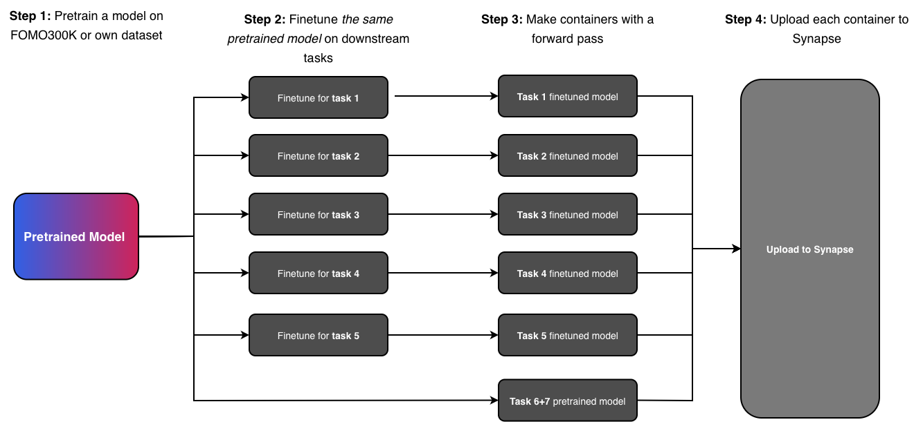

Welcome to FOMO26
The Foundation Model Challenge for Brain MRI at MICCAI 2026
Same core philosophy as FOMO25, now expanded with 306,207 brain MRI scans for pretraining and seven downstream tasks evaluating generalization in realistic clinical settings.


Towards Clinical-Grade Foundation Models:
The FOMO26 Challenge Setup
Track 1: Methods
Pretrain on FOMO300K.
Participants pretrain using the official FOMO26 large-scale dataset to compare methods under a shared data regime.
Comprehensive code-release.
$1000 prize money.
Track 2: Open
Pretrain on Any Data.
Participants may use additional public/private data and custom pipelines to maximize generalization.
Open-data and proprietary pipelines allowed.
$1000 prize money.
Evaluation
Few-shot and out-of-domain clinical benchmarks.
As in FOMO25, all methods are evaluated on clinically relevant downstream tasks; FOMO26 expands the suite with additional tasks and broader scanner/domain coverage.
No restrictions on finetuning strategy unless explicitly stated in task rules.
Timeline
April 2026
Challenge registration opens. Access to pretraining dataset and finetuning data. Public GitHub repo with example pretraining and finetuning code (MAE + U-Net) released.
15 May 2026
Sanity-check pipeline on Synapse opens — technical validation to confirm containers are correctly configured.
15 June 2026
Validation leaderboard opens. Final submission pipeline opens.
21 August 2026
Challenge submission deadline.
MICCAI 2026 — 4 or 8 October
Results announced. Top teams present their methods.
Tasks
Seven downstream tasks spanning classification, segmentation, regression, and representation quality. Tasks 1–3 continue from FOMO25; Tasks 4–7 are new.
Infarct Classification
Few-shot binary classification of acute ischemic infarcts from clinical MRI acquired in Denmark and India.
Meningioma Segmentation
Few-shot segmentation of meningioma tumors from clinical brain MRI.
Brain Age Estimation
Regression of chronological brain age from T1w MRI scans across a broad age range.
Trigeminal Neuralgia Segmentation
Multiclass segmentation of the trigeminal nerve and surrounding vessels, relevant to surgical planning.
Polymicrogyria Classification
Few-shot binary classification of polymicrogyria, a rare cortical malformation, from T1w MRI.
Linear Probing
Embedding quality assessment via linear separability — no finetuning allowed. Measures what the model learned during pretraining.
Bias and Fairness
Group fairness evaluation using the same linear probing setup as Task 6. Assesses whether embeddings encode or suppress demographic and acquisition biases.
Challenge Overview
The goal is to pretrain a foundation model and evaluate it on 7 downstream tasks, of which 5 require finetuning. Tasks 5 and 6 are linear probing tasks — participants only need to provide a container that produces an embedding per input; no finetuning is necessary. We provide boilerplate code for all tasks, including how to build the submission containers, to minimize workload.

Challenge Rules
Failure to comply with any of the rules below will result in disqualification. Edge cases or ambiguities will be reviewed by the organizing committee on a case-by-case basis.
Tracks
For all tasks, the challenge will have two tracks:
Methods Track
No additional data allowed. Challenge participants can only use the large-scale FOMO300K dataset. This track is intended to provide insights into methods development for pretraining, finetuning, and model architectures.
Open Track
Any data allowed for pretraining. Challenge participants can use any data, including private data, for their submissions. This includes submissions using any form of segmentation maps obtained through manual labor or disease diagnosis information during pretraining. All data used must be specified and properly cited. The track is intended to allow participants to showcase and compare brain MRI Foundation Models.
Submission Rules
Single Pretrained Model Across Tasks
Each submission must use the same pretrained checkpoint across all downstream tasks. Submitting different pretrained checkpoints for different tasks is not allowed.
Finetuning Data
For both tracks, additional data is not allowed for finetuning. The premise of the challenge is to evaluate model performance in the context of few-shot generalization on clinical data. Allowing participants to use their own data for finetuning would meaningfully divert from this and is thus not allowed.
Validation Attempts
Each team is allowed a maximum of 3 valid attempts per task per track on the validation leaderboard.
Runtime Constraint
Submissions are subject to a runtime limit of 120 seconds per case on a compute node with an 80 GB VRAM H100 GPU and 32 CPUs.
Leaderboard & Evaluation
For each task, all test cases are assigned a uniform weight, and each metric is averaged over all cases in the test set.
Per-Task Leaderboard
For each task, a per-task summary statistic is computed as the average of the ranks across metrics (or the rank itself if the task has only one metric). Submissions are then ranked based on this summary statistic.
Unified Leaderboard
The overall rank is computed as a weighted average of per-task ranks.
Tasks 1, 3, 5, 6, and 7
Tasks 2 and 4
For tasks not included in a submission, the worst possible rank for that task is used.
Prizes
A cash prize of $1,000 per track, distributed among the top three teams on the unified leaderboard:
Publication Policy
The aim is a publication in a journal such as Nature Methods, Medical Image Analysis, npj Digital Medicine, or IEEE Transactions on Medical Imaging.
All participating teams that have made substantial submissions to all tasks — excluding trivial approaches such as zero-output predictions, random guessing, or unmodified baseline use — will be invited to contribute to the manuscript. Each team can have at most five authors on the publication. Exemptions will be considered on a case-by-case basis.
Team
Organising Committee
University of Copenhagen & Pioneer Centre For AI
University of Copenhagen & Pioneer Centre For AI
University of Copenhagen & Pioneer Centre For AI
University of Copenhagen & Pioneer Centre For AI
University of Copenhagen & Pioneer Centre For AI
University of Copenhagen & Pioneer Centre For AI
University of Copenhagen & Pioneer Centre For AI
University of Copenhagen
University of Copenhagen
University of Copenhagen
University of Copenhagen
Copenhagen University Hospital, Rigshospitalet
Radiological AI Testcenter, Denmark
Copenhagen University Hospital, Rigshospitalet
Johns Hopkins University
Scientific Committee
University of Copenhagen
University of Copenhagen & Pioneer Centre For AI
Radiological AI Testcenter & Copenhagen University Hospital
Copenhagen University Hospital
Mental Health Centre Copenhagen & University of Copenhagen
MGH / Harvard Medical School & MIT
University of Copenhagen & Copenhagen University Hospital, Rigshospitalet
Johns Hopkins University
University of Copenhagen & Pioneer Centre For AI
News
Signup Is Now Open
April 20, 2026
Registration for FOMO26 is now open! Sign up to participate and get access to the pretraining dataset and finetuning data.
FOMO25 Paper Is now Available
April 13, 2026
The FOMO25 paper summarizing the results from last year's challenge is now on arXiv!
Announcing FOMO26
April 3, 2026
We are excited to announce FOMO26, the Foundation Model Challenge for Brain MRI at MICCAI 2026. Full documentation and registration details will be published soon.
FAQ
How will you process my models? +
Models will only be used for purposes of the challenge and subsequently deleted. The challenge organizers are able to sign confidentiality agreements when necessary. Please contact us for more info.
How can I learn from last year's challenge? +
Read the challenge paper from last year! The FOMO25 paper summarizes the challenge and includes detailed descriptions of all 19 submitted foundation models from 16 teams. In particular we find:
- Self-supervised pretraining improves generalization on clinical data under domain shift, with models trained outside the target domain surpassing supervised baselines trained within-domain.
- Different pretraining objectives suit different tasks — masked autoencoders favor segmentation while hybrid reconstruction-contrastive methods excel at classification.
- Smaller pretrained models achieved strong performance, and increasing model size or training duration did not consistently improve results.
Am I required to make my code publicly available? +
Publishing code is not mandatory. However, participants must provide sufficient methodological detail in their submission to allow reproducibility if they wish to be included in the follow-up publication. We of course highly encourage all participants to publish their code.
Join the Challenge
Interested in participating, sponsoring, or collaborating? Sign up now to get notified and secure your spot.
Sign Up for FOMO26Or contact us at fomo26@di.ku.dk